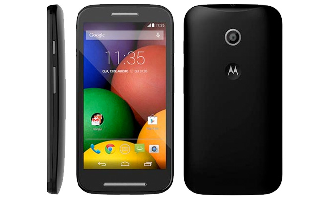
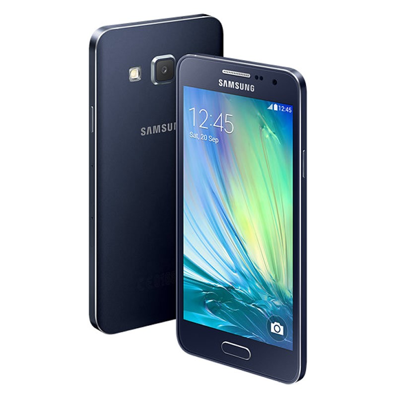
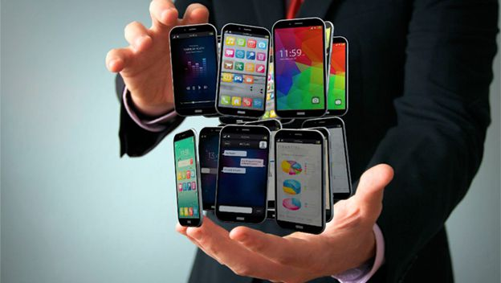

CLASIFICACION DE LOS CELULARES DE ACUERDO A SU GAMA
Desde los más básicos, hasta los terminales estrellas de cada empresa están sujetos a ser clasificados según: ¿que tienen por dentro?, ¿como se ven? y ¿que son capaces de hacer?
Para evitar caer en una comparativa exclusiva de precios hay que mirar más en detalle cada dispositivo que nos interesa porque puede ser engañoso en algunas ocasiones.
.
Gama baja
En está categoría entran desde marcas chinas, imitaciones de gama media o alta hasta terminales obsoletos con muy pocas excepciones.
-
Suelen ser pequeños
-
Tienen funciones básicas o las funciones que traen ya no están a la altura de un SmartPhone
-
Precios muy economicos
-
Características muy limitadas (cámara VGA, memoria interna, sin flash, se ponen muy lentos con el tiempo)
-
No reciben soporte ni actualizaciones.
Gama media
Aquí se ubican algunos dispositivos de marcas asiáticas, dispositivos devaluados por el tiempo que tienen en el mercado y las propuestas conservadoras en especificaciones de marcas reconocidas que pueden hacer mucho pero no tanto.
-
Suelen ser muy equilibrados en sus características
-
Generalmente no superan los 500 dólares en precio (como mucho).
-
Tienen algunas funciones de la gama alta del momento.
-
Los materiales ya son de calidad aceptable.
-
Pantallas que no superan las 4.5 pulgadas (en promedio).
-
Cámaras de 3 a 5 Mpx
-
Tienen soporte limitado pero existe comunidad de desabolladores para actualizar con una ROM
Teléfonos de gama media:
-
MOTO G4 PLUS
-
LG G5
-
HUAWEI P9
Gama alta
Aquí se ubican los mejores smartphones, se distinguen por sus exquisitas especificaciones pero no necesariamente representan una mejor experiencia al usarlos si no se elige con cuidado.
Los mejores avances tecnológicos pueden aparecer en está gama para luego ser heredados con el tiempo a la gama media en menor medida.
También pueden incluirse otros terminales no tan nuevos pero que siguen siendo una excelente opción en gama alta aunque no cumplan con el requisito del precio.
-
Pantallas de 4 pulgadas en adelante
-
Memoria interna desde 16GB
-
Soporte de actualizaciones (las recibe antes pero depende de la marca)
-
Diseñados para redes 4G
-
Muchos núcleos, procesadores y RAM para que sean muy rápidos
-
Cámaras de calidad desde 8 Mpx
-
Destacan por ser relativamente delgados
-
Eficiencia energética
-
Se conectan con la TV
-
Desde 800 dólares en adelante
Algunos smarphones de gama alta son:
-
NOKIA
LUMIA 930
-
SAMSUNG GALAXY S7 EDGE
-
IPHONE 7 PLUS
CLASIFICACIÓN POR GAMA

Aplicacion Dos, DPC